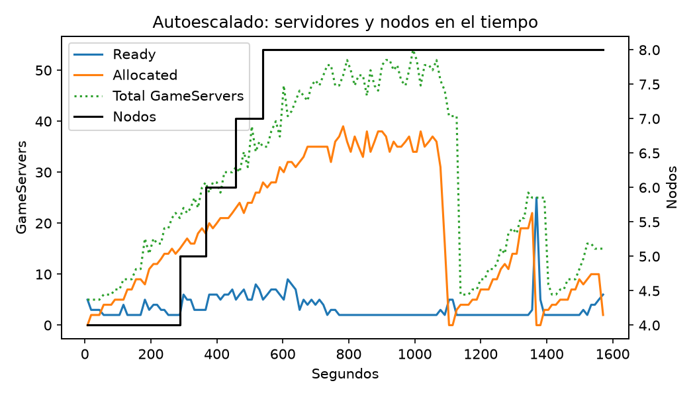

TECNOLÓGICO NACIONAL DE MÉXICO
INGENIERIA EN INTELIGENCIA ARTIFICIAL
COMPUTO EN LA NUBE
PROYECTO INTEGRADOR UNIDAD 3: REPORTE TÉCNICO
LANZAMIENTO DE "LA TORRE" EN AWS
PROFESOR: JOEL MONICO SANCHEZ VELASCO
ALUMNO: CARLOS ALEJANDRO VIZCAINO ANGUIANO
16/11/2026
El proyecto integrador pide simular el día de lanzamiento de un juego en línea: infraestructura creada con Terraform, servidor publicado por CI/CD en una flota que escala sola, tabla de líderes serverless y pruebas de carga que muestren cuántos jugadores y espectadores soporta la plataforma. En lugar del caso de estudio Nebula Arena usé mi propio juego, La Torre, un roguelike en el que hasta tres jugadores suben una torre de cuatro pisos y pelean contra un jefe en cada uno. El servidor es autoritativo (el cliente solo manda acciones y el servidor decide todo), corre a 20 ticks por segundo y envía el estado a los jugadores y espectadores 10 veces por segundo. Todo se montó en AWS, región us-east-2, de forma individual. Este reporte resume la arquitectura y los resultados; el detalle de cada práctica con todas las capturas está en el anexo, y el código en el repositorio privado https://github.com/Carlosvzc/la-torre.
Cada partida vive en un GameServer de Agones dentro de un clúster EKS. El FleetAutoscaler mantiene un 20 % de servidores libres y el Cluster Autoscaler agrega nodos cuando los servidores nuevos ya no caben. GitHub Actions corre las 131 pruebas del proyecto, valida los manifiestos y Terraform, y construye la imagen etiquetada con el SHA del commit; al actualizar la flota, Agones solo reemplaza los servidores libres y las partidas en curso terminan con su versión. La tabla de líderes es una función Lambda con DynamoDB. Toda la infraestructura se crea con un terraform apply y se borra con un terraform destroy; después de la prueba revisé que no quedara ningún recurso huérfano. Como la cuenta está en el plan gratuito, usé nodos c7i-flex.large (2 vCPU y 4 GiB, el tipo optimizado para cómputo que permite el plan) y, como una política de la organización impide crear proveedores OIDC, la imagen se publicó en ECR desde la terminal con los mismos pasos del pipeline.
Locust corrió como un pod dentro del mismo clúster, para no medir la latencia de internet, con 1.5 vCPU reservadas. Cada jugador simulado pide un servidor a Agones, juega partidas completas con la estrategia de los bots del juego (20 acciones por segundo) y mide su latencia con un ping por segundo; cada espectador se conecta a una partida en curso y mide cada cuánto le llega el estado. Prometheus leyó las métricas de los servidores cada 5 segundos y un script registró los servidores y nodos cada 11 segundos. Hice tres pruebas:
Para cuidar el presupuesto limité el clúster a 8 nodos, por lo que no llegué a los 1 000 jugadores y 500 espectadores que propone el material; los resultados de abajo son de la escala que sí medí y la sección 6 los extrapola.
Tabla 1. Resultados medidos.
| Medición | Resultado |
|---|---|
| Latencia (RTT) en la rampa | 73 537 pings sin fallos: p50 de 1 ms, p95 de 2 ms y p99 de 6 ms |
| Duración del tick p99 | 2.2 ms como máximo (meta: menos de 25 ms) |
| Partidas completas | 172 en la rampa (65 victorias) |
| Estado enviado a los espectadores | 51 039 envíos a 30 espectadores, ninguno tardío, uno cada 100 ms |
| CPU por GameServer | 17.7 milinúcleos en promedio (reservados: 250) |
| Egress | 119 kbps por jugador y 57 kbps por espectador |
| Tabla de líderes | 133 369 peticiones; p50 de 71 ms y p99 de 360 ms; 80 % rechazadas con error 429 |


La latencia nunca se acercó a la meta de 80 ms y el servidor mantuvo un tick de unos 2 ms, así que el juego no fue el cuello de botella. En la tabla de líderes, Lambda nunca pasó de 10 instancias simultáneas: es el límite de concurrencia de las cuentas nuevas (lo normal es 1 000), por eso atendió unas 85 peticiones por segundo y rechazó el resto. Solo hubo 10 arranques en frío de unos 93 ms, así que la cola de latencia viene de esa saturación y no del arranque en frío.
El FleetAutoscaler subió los GameServers de 5 a 54 y el Cluster Autoscaler subió los nodos de 4 a 8, agregando uno a los 288, 366, 458 y 540 segundos. Desde el primer pod pendiente (segundo 80) hasta el primer nodo nuevo listo pasaron 208 segundos, unos tres minutos y medio; ese es el tiempo de reacción de la capa de nodos. La capa de servidores reacciona en segundos mientras haya espacio en los nodos.
Con 8 nodos se llegó a entre 35 y 39 servidores asignados, es decir, entre 105 y 117 jugadores. La capacidad máxima medida es de unos 13 a 15 jugadores por nodo, contando que esos nodos también tenían a Agones, Prometheus y Locust. Lo que la limitó fue la CPU reservada: con 250m por servidor solo caben unos 7 servidores (21 jugadores) en un nodo de 2 vCPU, aunque cada servidor usó apenas 18m. Con 50m el límite pasaría a ser de 29 pods por nodo, unos 25 servidores o 75 jugadores por nodo.
Los precios son los oficiales de AWS para us-east-2 (AWS Price List API): nodo c7i-flex.large a 0.08479 dólares por hora, clúster EKS a 0.10, IP pública a 0.005 y salida a internet de 0.09 a 0.05 dólares por GB según el volumen del mes. Para 20 000 jugadores supuse que el consumo por servidor y por jugador crece de forma lineal: 6 667 servidores que, con la reserva actual, ocupan unos 953 nodos y, con la reserva ajustada a 50m, unos 267.
Tabla 2. Costo por hora y por jugador.
| Escenario | Cómputo USD/h | Egress USD/h | USD por jugador-hora |
|---|---|---|---|
| Medido: 120 jugadores en 8 nodos | 0.82 | 0.58 | 0.0117 |
| 20 000 jugadores, reserva actual (953 nodos) | 86 | 54 a 96 | 0.007 a 0.009 |
| 20 000 jugadores, reserva de 50m (267 nodos) | 24 | 54 a 96 | 0.004 a 0.006 |
Con la fórmula de egress del material (GB/hora = CCV × kbps × 3600 / 8 000 000), 20 000 espectadores generarían 513 GB por hora con el estado del juego que medí (de 26 a 46 dólares) y 54 TB por hora si se les mandara video a 1080p de 6 000 kbps (de 2 700 a 4 860 dólares por hora). La tabla de líderes, en cambio, cuesta unos 1.33 dólares al mes con un millón de peticiones, contra 11.88 de una VM t3.micro encendida todo el mes. El gasto real del día fue de entre 1.5 y 2.5 dólares, cubierto con los créditos de la cuenta.
Tabla 3. Configuración recomendada.
| Parámetro | Usado | Recomendado | Razón |
|---|---|---|---|
| CPU reservada por GameServer | 250m | 50m | El consumo real fue de 18m; la reserva fue lo que llenó los nodos. |
| bufferSize | 20 % | 30 %, con minReplicas de al menos 10 en eventos | Con 20 % se acabaron los servidores libres y un nodo nuevo tarda 3.5 minutos. |
| Tipo de máquina | c7i-flex.large | c7i-flex.large | La CPU sobra (tick de 2.2 ms); con 50m el límite es de pods por nodo. |
| Mínimo de nodos | 2 | 2, y escalar antes de un lanzamiento | El escalado no alcanza a cubrir un pico repentino. |
La escala de la prueba fue de 120 jugadores y 30 espectadores, no de 1 000 y 500, por el límite de 8 nodos que fijé para no pasarme del presupuesto; con la reserva de 50m y unos 14 nodos, la misma infraestructura alcanzaría los 1 000 jugadores dentro de la cuota de 32 vCPU. Además, en 302 ocasiones un jugador simulado pasó más de 5 segundos sin recibir estado, casi siempre al cerrar la partida, y no confirmé la causa. Tampoco medí el entrenamiento del bot en GPU.
La plataforma funcionó en todas sus partes: Terraform crea y destruye todo, el pipeline prueba y publica cada versión, la flota escala en sus dos capas y la tabla de líderes funciona bajo carga. Lo más valioso fue ver que los límites no estaban en el juego, que respondió con 2 ms de tick y 6 ms de latencia en el p99, sino en la configuración y en la cuenta: la CPU reservada en Kubernetes, el límite de concurrencia de Lambda y las restricciones del plan gratuito. Con los ajustes de la tabla 3, el costo bajaría a menos de medio centavo de dólar por jugador por hora y el egress quedaría como el siguiente punto a optimizar.